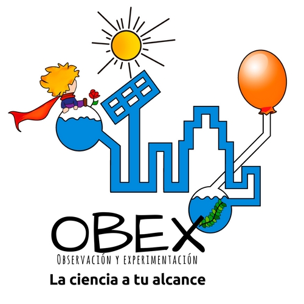

<mat-toolbar class="headerLogos">
  
  <h1 class="tituloHeader">
    TCU OBEX
  </h1>
  <h4 class="textoHeader">
    Enseñando Ciencia basada en<br>Observación y Experimentación
  </h4>
  <a href="http://www.ucr.ac.cr">
    
  </a>
  <a href="https://accionsocial.ucr.ac.cr/">
    
  </a>
  <a href="https://tcu.ucr.ac.cr/core/tcu_index/">
    
  </a>
</mat-toolbar>

<mat-toolbar>
  <div *ngIf="screenWidth < 700">
    <button mat-icon-button (click)="onToggleSidenav()">
      <i class="material-icons">menu</i>
    </button>
  </div>
  <div *ngIf="screenWidth >= 700">
    <button mat-button routerLink="/">Inicio</button>
    <button mat-button [matMenuTriggerFor]="areasInteres">Áreas de interés <i class="material-icons">arrow_drop_down</i></button>
    <mat-menu #areasInteres="matMenu">
      <button mat-menu-item *ngFor="let area of areasDeInteres">{{area.esp_nombre}}</button>
    </mat-menu>
    <button mat-button [matMenuTriggerFor]="publicaciones">Publicaciones <i class="material-icons">arrow_drop_down</i></button>
    <mat-menu #publicaciones="matMenu">
      <button mat-menu-item>Publicaciones Científicas</button>
      <button mat-menu-item>Tesis</button>
    </mat-menu>
    <button mat-button [matMenuTriggerFor]="personas">Personas <i class="material-icons">arrow_drop_down</i></button>
    <mat-menu #personas="matMenu">
      <button mat-menu-item>Coordinador</button>
      <button mat-menu-item routerLink="/personas/Estudiante">Estudiantes</button>
      <button mat-menu-item routerLink="/personas/Estudiante en pasantía">Estudiantes en pasantía</button>
      <button mat-menu-item routerLink="/personas/Ex alumno">Estudiantes en pasantía</button>
      <button mat-menu-item routerLink="/personas/Profesor">Estudiantes en pasantía</button>
    </mat-menu>
    <button mat-button [matMenuTriggerFor]="noticias">Noticias <i class="material-icons">arrow_drop_down</i></button>
    <mat-menu #noticias="matMenu">
      <button mat-menu-item>Noticias y artículos destacados</button>
      <button mat-menu-item>Premios y Honores</button>
      <button mat-menu-item>Próximas Actividades</button>
    </mat-menu>
    <button mat-button [matMenuTriggerFor]="divulgaciones">Divulgaciones<i class="material-icons">arrow_drop_down</i></button>
    <mat-menu #divulgaciones="matMenu">
      <button mat-menu-item>Enlaces y Recursos</button>
      <button mat-menu-item>Galería de Imágenes</button>
      <button mat-menu-item>Otros artículos sobre nuestra investigación</button>
    </mat-menu>
    <button mat-button>Cooperación con otros proyectos</button>
    <button mat-button>Contáctenos</button>
    <button mat-button>Facebook</button>
    <button mat-button routerLink="/usuarios" *ngIf="authService.isLoggedIn()">Usuarios</button>


  </div>
  <span class="spacer"></span>

  <button *ngIf="!authService.isLoggedIn()" class="padd" mat-button (click)="abrirLogin()"> <mat-icon>person</mat-icon>Login</button>
  <button *ngIf="authService.isLoggedIn()" mat-button [mat-menu-trigger-for]="perfil"><mat-icon>person</mat-icon>{{authService.getNombreCompleto()}}</button>
  <mat-menu #perfil="matMenu">
    <button mat-menu-item (click)="authService.logout()">Logout</button>
  </mat-menu>
</mat-toolbar>
